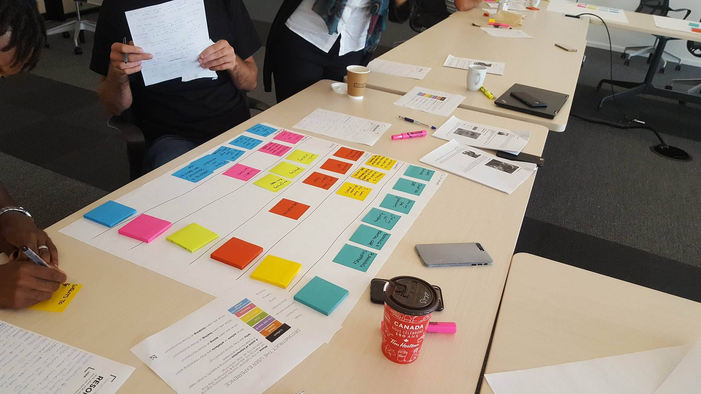

As part of my internship at Loyalty One on the AIR MILES UX Team, I had the opportunity to work with the lead user researcher to perform research studies for the mobile app. This project documents one of the research studies I was heavily involved with.
In June 2017, the new 3.0 version of the AIR MILES Rewards Program mobile app was released on both iOS and Android devices to lukewarm feedback. An experience map was proposed by the UX Research Team to analyse ways to improve the app in future releases. To gather information for this experience map, a unique research method, context chats, were performed.
A context chat is a qualitative research method for doing contextual user research through the use of mobile chatting platforms (Facebook Messenger, WhatsApp, etc...).
Context chats can help researchers engage with their end users easily and discover important moments and milestones in their journey.
There were 12 participants in the study and 9 questions were asked in total over the course of 3 weeks. We began by ideating on the questions to ask based on the objectives and questions we wanted to answer (ex. What motivates collectors to open up the app?) After each question for each day was planned out, we contacted collectors that met the criteria that we wanted to research with.
Three times a week, we would send questions to our collectors. After answering our initial questions, we asked follow up questions tailored to each collector to gain more valuable insights. This allowed us to discover unique journeys and motivations.
All collectors in the study were excited and engaged throughout the duration of the study. Many willingly shared valuable insights and personal motivations they had when using the app and program. All chat transcripts were printed out and analysed to create the experience map.
After the context chats, we held an Experience Mapping workshop for two days and invited members of different teams (not only UX) to read through and analyse the data, finding out the experience of these collectors, what their moments of truths were and what can be done to improve their experience. "Moments of truths" were moments where the user decided to either start, stop or continue using the app.
tribel
Slice